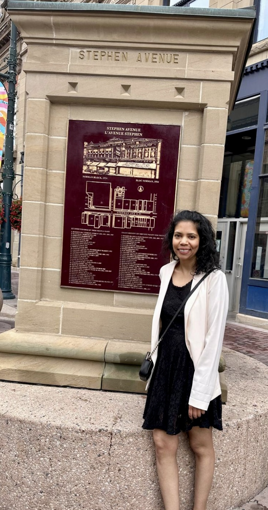

SUKHJEEVAN SETHI

PROFILE
Detail-oriented and compassionate healthcare professional transitioning into web development, bringing a unique blend of problem-solving skills, precision, and user-centered thinking. Experienced in high-pressure environments requiring critical decision-making, clear communication, and teamwork. Recently completed intensive training in HTML with hands-on experience building responsive, accessible web applications. Passionate about leveraging technical skills to create innovative digital solutions that improve user experiences and enhance service delivery—especially in health tech and related industries.
SKILLS
- Proficient in HTML, MS Office applications such as Excel, PowerPoint, Outlook & Word, SharePoint, Teams, Adobe, Google Docs & Canva
- Strong analytical, decision-making, case management, data entry & administrative skills
- Detail-oriented with a keen focus on paperwork and information processing
- Excellent customer service, conflict resolution and communication skills
WORK EXPERIENCE
Re-Employment Specialist, Aug 2023 - Present
CBI Health, Calgary, AB
- Administer return-to-work planning for clients, manage disability claims through in-depth personal interviews and review medical conditions as well as functional abilities.
- Conduct extensive labour market research, assess the potential for accommodations and coordinate recommendations.
- Collaborate with different departments and share insightful ideas with the Health & Safety Committee.
- Consulted 100+ clients on effective employment placement strategies and prepared detailed training plans.
Personal Support Worker, Mar 2019 - June 2023
Closing the Gap Healthcare, Mississauga, ON
- Provided critical personal care to geriatric patients by focusing on their physical, emotional, mental & nutritional wellbeing, as well as maintained patients’ confidentiality.
- Observed & documented client conditions according to company standards, reported unusual events or changes in client’s health, and operated mobility assistive machinery such as the Hoyer lift training.
EDUCATION
- Recruiting, Hiring, and Onboarding Employees Certificate | University of Minnesota, Coursera Feb 2025
- BHSc in Workplace Health & Wellness (Honors Student) | Humber College June 2023
- Diploma in Practical Nursing | Humber College Aug 2014
- Recertified with Canadian Red Cross in CPR/AED Level BLS Oct 2022
- Certificate of Participation in Mental Health First Aid Dec 2022
- ASIST Workshop in Suicide First Aid March 2013
- CELTA (Certificate in Teaching English to Speakers of Other Languages) | University of Cambridge Aug 2021
OTHER
My Hobbies